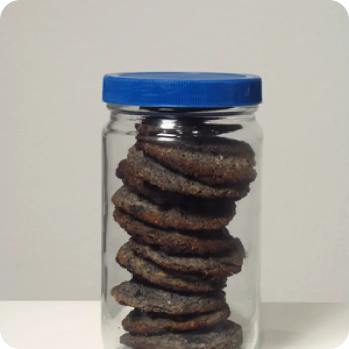
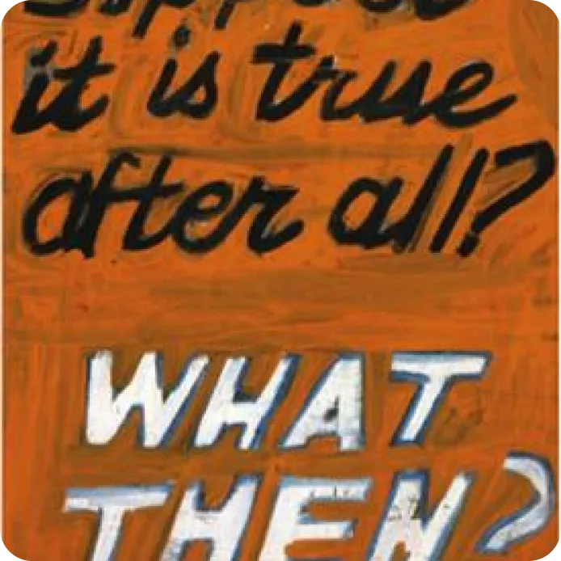

John Baldessari, né le 17 juin 1931 à National City (Californie) est un artiste conceptuel américain, représentant du courant post-moderniste qui recourt notamment à la photographie. De 1959 à 1968, John Baldessari réalise deux sortes d'œuvres : des peintures narratives, des toiles sur lesquelles des lettres sont peintes, et des Fichues Allégories, des photographies légendées en référence à l'histoire de l'art De 1969 à 1977, il réalise des films et des vidéos expérimentales. À partir de 1980, il se consacre à la réalisation de tableaux constitués de photographies, d'images cinématographiques qu'il collectionne, recadre, colorise.


